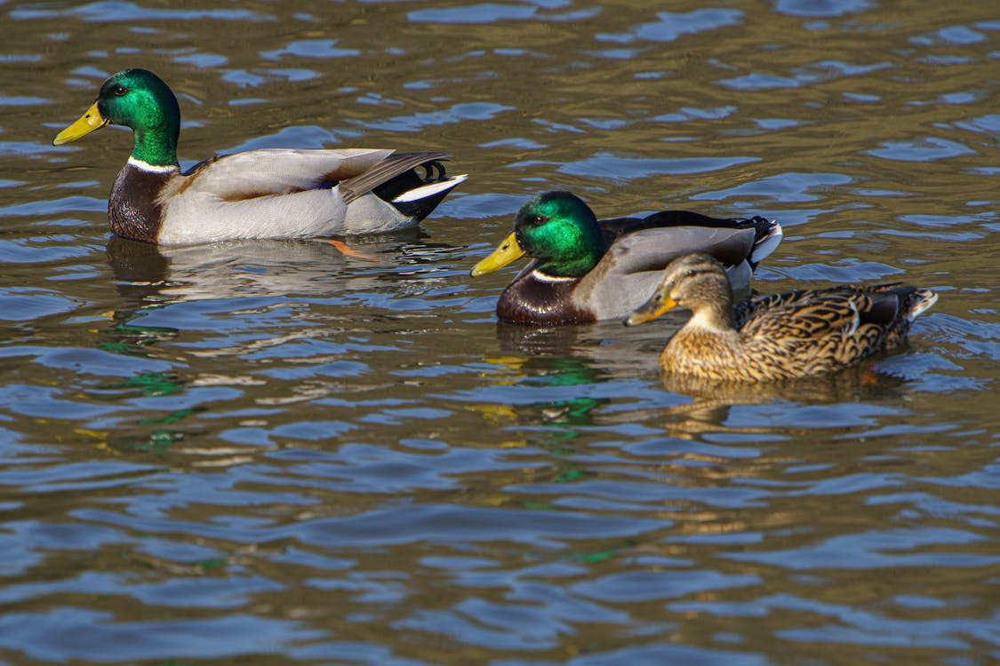

Goa
Fort Aguada is a well-preserved 17th-century Portuguese fort standing on Sinquerim Beach, overlooking the Arabian Sea. Built in 1612 to guard against the Dutch and the Marathas, it was the most prized and crucial fort for the Portuguese. The name "Aguada" (meaning "water") comes from the perennial freshwater spring within the fort that once provided water to the ships that stopped by. The fort's lower part served as a safe berth for Portuguese ships, while the upper part contains the lighthouse, the moat, and the massive water cistern.
Fort Aguada is located on Sinquerim Beach in North Goa, about 18 km from Panaji.
The best time to visit is from October to March. Visit late in the afternoon (around 4:00 PM) to catch the sunset from the ramparts.
By Air: Dabolim Airport is approx. 40 km away.
By Train: Thivim is the nearest railway station (approx. 20 km).
By Road: Very well-connected by road; frequent taxis and shared buses operate from Calangute and Panaji.
- Wear comfortable walking shoes as the fort complex involves a fair amount of walking on uneven stone.
- Carry water and a hat, as there is limited shade within the upper fort area.
- Be careful when walking near the edges of the ramparts; many areas do not have railings.
- The fort is a popular filming location, so you might occasionally see movie shoots happening.